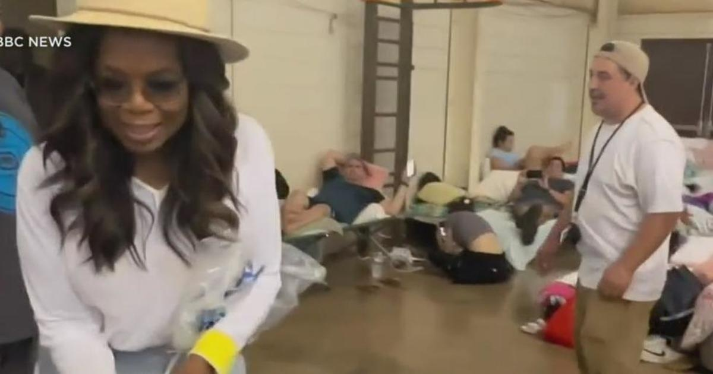

Oprah Winfrey visits Maui shelters and donates time, supplies to fire evacueesHAWAII -- Oprah Winfrey was spotted at shelters on Maui visiting with people displaced by the wildfires and bringing much needed supplies this week. "Mahalo Nui Oprah for following through! She returned with cots, pillows, and toiletries for the people in the shelter in Wailuku. She even spent some time with the people there. It was very much appreciated," local non-profit group Kāko'o Haleakalā posted on Instagram with video of Winfrey carrying pillows through crowds of people on cots and folding chairs. Winfrey, media mogul and former talk show host, owns property on the island, and her spokesperson confirmed to CNN she has been volunteering at emergency shelters. "Oprah has been to several local shelters to ask first-hand what was most needed," Oprah's spokesperson said. "She then went to Walmart and Costco to shop for the items and brought them back. It is heart-breaking devastation." Hettrick said Winfrey plans to give more support "as it becomes clear which funds can be the most helpful for the short-term and long-term rebuilding." The wildfires in Maui have ravaged the island, killing over four dozen people. In particular, the fires have devastated Lahaina, a town on Maui. It's not the first time Winfrey has helped out in times of wildfires. In 2019, she opened a private road on her property in Maui to help people quickly escape a brush fire that broke out. for more features. |
 |